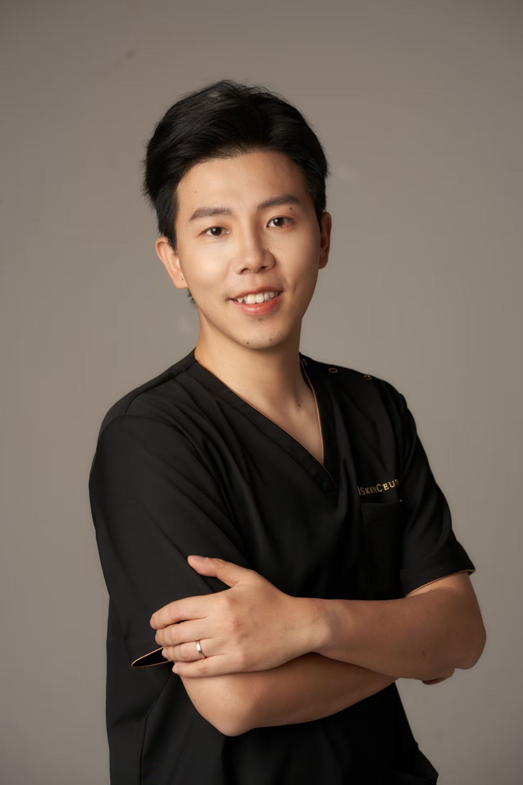

01
丽妍青春诊所
本地长寿医学、功能医学和健康管理服务的实践现场。

Hi诊所是实践现场，教育是行业服务，视频号是公开表达。三件事放在一起，才知道一个大健康项目是不是真的能被客户理解、被团队交付。
本地长寿医学、功能医学和健康管理服务的实践现场。
面向美业与医美机构的大健康转型课程与陪伴式服务。
记录美业、医美、大健康转型的一线观察和同业拆解。
我会把一些适合公开使用的业务诊断、项目测算和课程评估工具放在这里。先从大健康营收潜力测算开始，后续再逐步补上自建能力评估。
功能医学、长寿医学和大健康，不应该只停留在概念里。真正难的是客户听不听得懂，顾问敢不敢讲，医生和店长能不能配合，服务能不能持续做下去。
医学背景让我知道边界；经营现场让我知道客户、团队和交付的真实反应。
如果你也在关注美业、医美和大健康的连接，这些话题都适合直接聊。
临床医学硕士，医疗美容主诊主治医师，北京大学光华管理学院 MBA，康奈尔大学酒店管理学院 MMH，A4M 抗衰老与再生医学认证候选人。